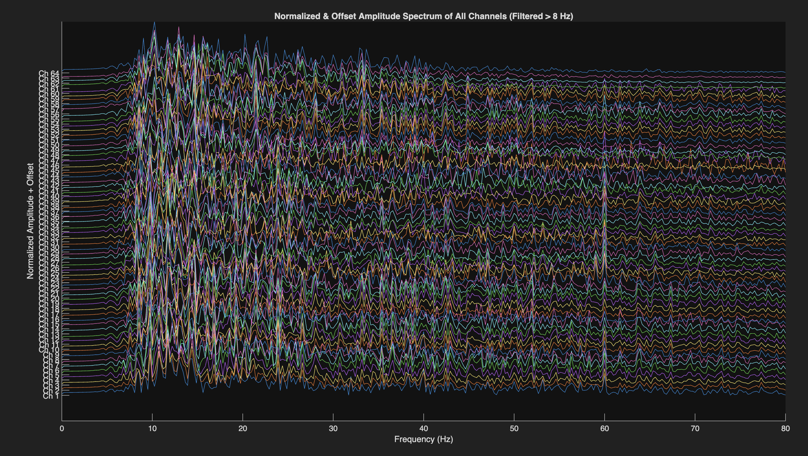
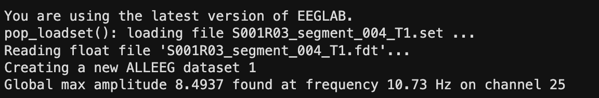

High pass at 8 Hz then compute FFT per channel. Track the global peak frequency across all 64 channels.
After seeing the time domain signal, the next question is where the energy lives in frequency. Motor imagery has known frequency domain signatures such as event related desynchronization in the alpha and beta bands contralateral to the imagined movement. This script computes the amplitude spectrum for each channel and identifies the peak frequency across all channels, giving the dominant oscillation during the task segment.
This script reads .set files, so the dataset to use here is
EEG Classification SetFormat.zip
on Zenodo. This contains the organized segment classes, but not the Eyes Open or Eyes Closed baselines. Those were originally .edf recordings that never needed segmenting, so they were never converted into .set format alongside the segments.
To run this on a specific segment, add the full EEG_Classification folder and all its subfolders to your MATLAB path, then navigate into the class folder containing the file you want before running the script. For example, to look at S001R03_segment_004_T1.set, enter the Task1_Real_Left_Fist folder in MATLAB and run 02_fft_peak_frequency.m from there.
% High pass at 8 Hz suppress resting alpha and delta
[b,a] = butter(4, cutoff/(Fs/2), 'high');
for ch = 1:numChannels
filteredData(ch,:) = filtfilt(b, a, double(data(ch,:)));
end
% Single sided amplitude spectrum
Y = fft(channelData);
P2 = abs(Y/N);
P1 = P2(1:floor(N/2)+1);
P1(2:end-1) = 2*P1(2:end-1);
% Track global peak across all channels
[chMaxAmp, idxMax] = max(P1);
if chMaxAmp > globalMaxAmp
globalMaxAmp = chMaxAmp;
globalMaxFreq = f(idxMax);
globalMaxChannel = ch;
end
The 8 Hz high pass cutoff was chosen to suppress the resting alpha band which dominates baseline recordings. For motor task segments, activity above 8 Hz, particularly beta from 13 to 30 Hz and lower gamma, is more diagnostic. Removing sub 8 Hz components prevents strong resting alpha from dominating spectral peaks.
Doubling the non DC amplitude terms gives the correct single sided spectrum. Without this, amplitudes are reduced because energy is split between positive and negative frequency components. The resulting values are in the original signal units microvolts.
Peak frequencies clustered around 15 to 25 Hz in the beta band for task segments, consistent with known motor cortex signatures. Rest segments showed peaks closer to 8 to 12 Hz in the alpha band. This was an early positive sign that the data contained class discriminating frequency information.

